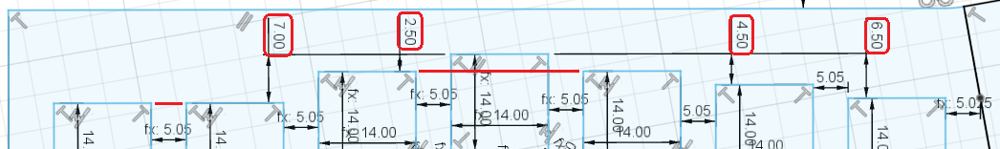
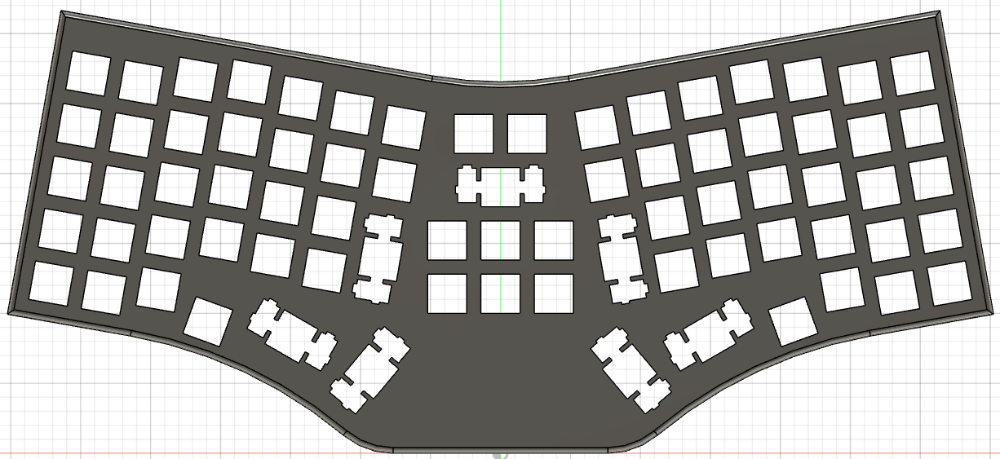
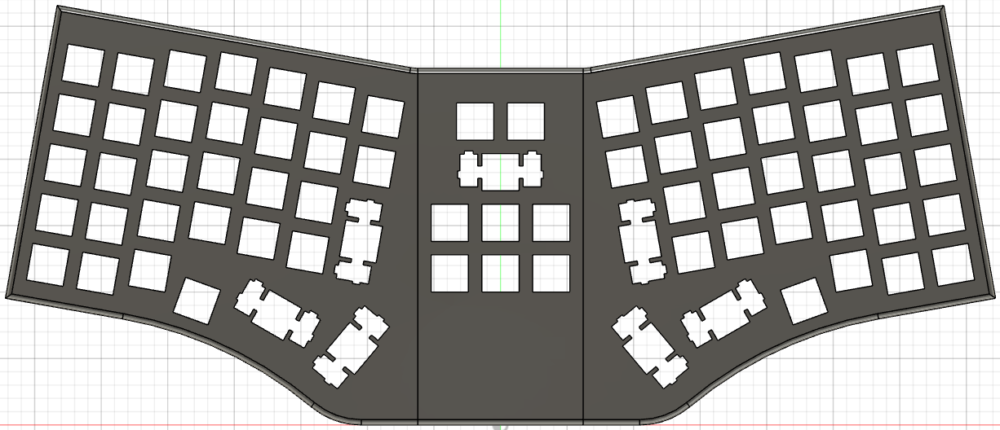
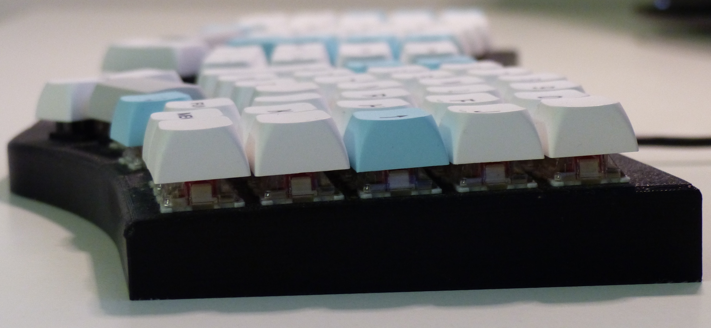
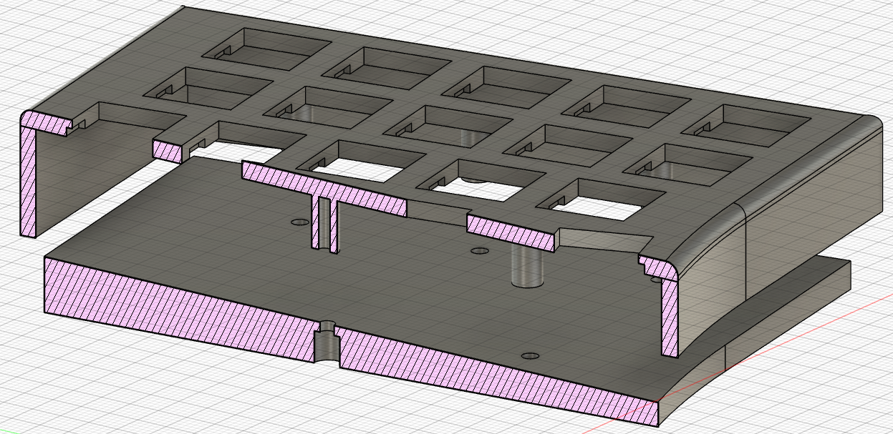
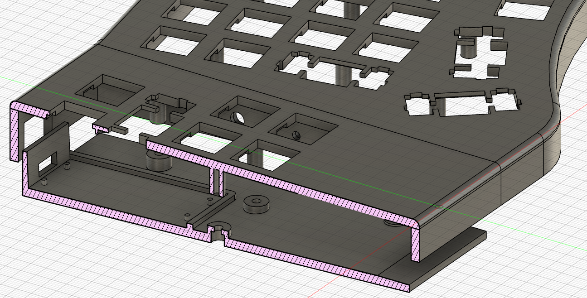
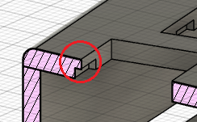
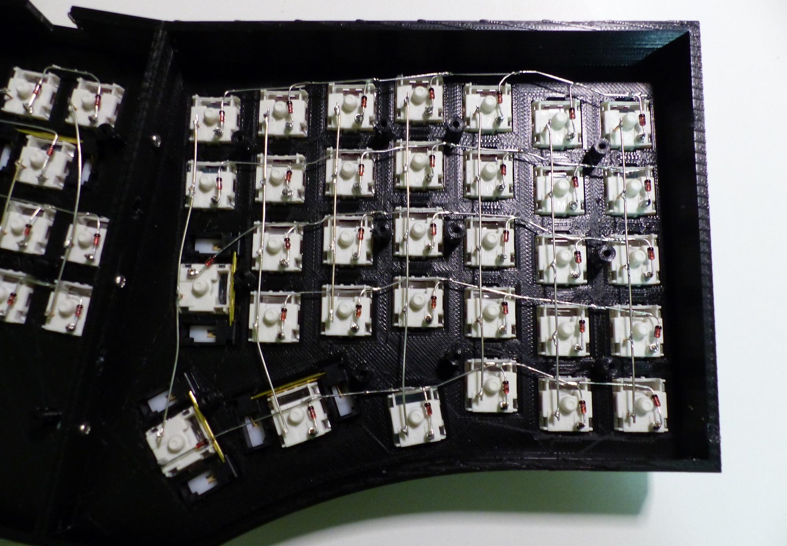
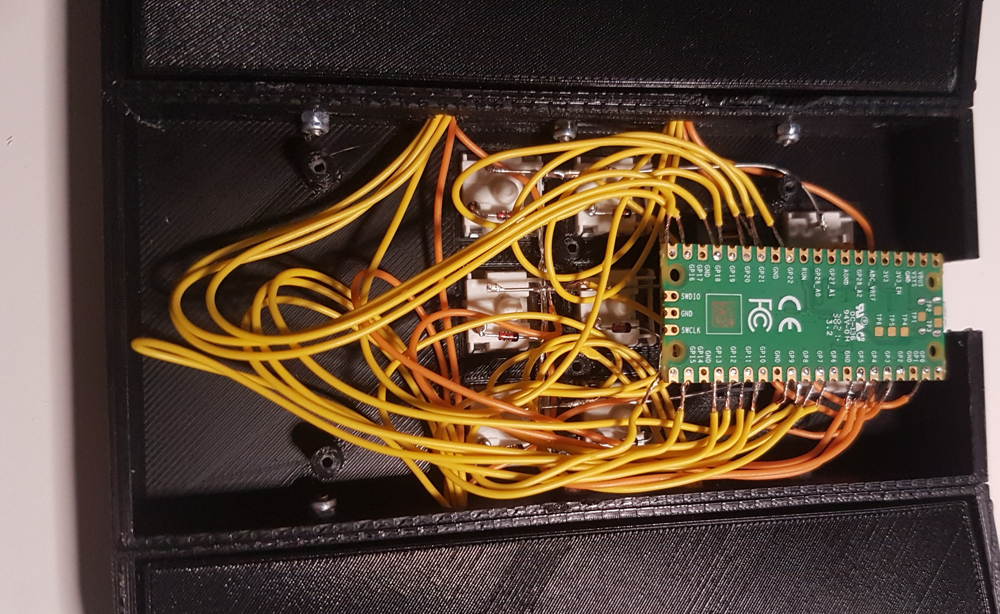

This article describes my thoughts and some expiriences during the conception and manufacturing of this keyboard. The files can be found in the repository.
Motivation
I have been using the Truly Ergonomic CLEAVE Keyboard for two years since mid-2021. I was never dissatisfied with this keyboard.
However, I wanted to abandon the QWERTZ layout, which is common in Germany, and change the keyboard to the MINE layout*.
The search for suitable keycaps was difficult. Maybe I could have had the keycaps to be exchanged printed individually, but this would never have been a perfect solution.
I came across the possibility to build a keyboard from scratch. Especially the videos of joe-scotto on YouTube have been very helpful.
*: In the above image, the keyboard is obviously not equipped with this layout. It is using the NOTED layout. This is a new layout published on GitHub just two weeks after this keyboard was assembled. So it was not the initial plan; but it convinced me. It was optimized with 60% German and 40% English. Which are the only languages I use.
A new Layout
To get to the layout, which is now present, I had to answer a few questions:
1: How do I arrange the keys?
2: How do I assign the keys?
3: Which keycaps do I use?
While the key arrangement was fixed after the case construction, the mapping was not. It changed quite a few times.
Key Arrangement
In search for an idea of how to arrange the keys on my keyboard, I came across the Redox Keyboard. The final layout of the keyboard has as a basis the Truly Ergonomic CLEAVE I used for a long time and also the Redox Keyboard.

|
The Redox Keyboard was the model for the number of keys in the outer area and the horizontal stagger of the key columns: 7, 7, 2.5, 0, 2.5 and 4.5 mm. Not the 6.5 mm of the inward column.  |
|
Of the Truly Ergonomic CLEAVE Keyboard I kept the inward keys: Paste, Undo, Cut, Copy (I have exchanged the last two, I need the Copy key on the left hand when working with the mouse.), Delete, Backspace, an additional Shift, Enter and the Spacebars.
I also adopted the opening angle of 20° between the two halves. |

|
|  |
The arrow keys are not included with the Redox Keyboard. I didn't want to put them down, as the truly ergonomic does. But I also didn't want to do without them (And the Home and End key).
So I had the idea to put them in the middle between the two halves, separating them a bit more. |
Key Mapping
Also the key mapping was influenced by the Truly Ergonomic Keyboard. For example the space bars and the keys in the middle of the Truly Ergonomic Keyboard. I only exchanged »cut« and »copy« as I need »copy« and »paste« on the left side when working with the mouse (on the right side).When mapping the keys to the »Noted« layout, this is the proposed solution:

I tried to move the »Tab« key in the central section of the keyboard. It did not work for me! So, the »ẞ« (sharp s) had to move. Not the »J«!
This mapping is already implemented in the firmware using QMK. See also the files in the QMK Repo. But I am still using the ReNeo software. It offers way more possible key functions than available in the firmware. There are in total six layers and those are completely configurable. On layer four I made some modifications to have keys for »ALT + F4«, »F2«, »F5«, »CTRL + LEFT« and »CTRL + RIGHT«. A file containing the used layout to define those layers can be found here.
Further details and images to the key mapping can be found here.
Keycaps
I wanted keys with the XDA profile to be able to change them between the rows.At the end, I took the cheapest. I did find sets with for example the german letters »Ä«, »Ö« and »Ü« or with »5«, »F« and »J« without a line. But this was not in one set.
And there was none with a second 1u SHIFT or CTRL key, none with a comma without »<« (the dot and the numbers are from the number pad), none with a TAB or DELETE key in the needed size and of course none with a »ẞ«. The »ẞ« key doesn't even exist on a German keyboard without additional symbols. Just like the »Q«, the »E« and the »M«. But as this keyboard is designed to work with the layouts of the Neo Family, none of the additional symbols would have made any sense!
Case Construction
|
So far I only had an idea of the key arrangement. The actual creation of this I directly did in the sketch in CAD (Autodesk Fusion 360).
I also had to divide the case into three parts. My 3D printer is too small for a complete keyboard.  The case is built without any surrounding boundary around the switches and the keycaps. The switches are visible and the upper part of the case is the only visible part of the case. The only reason for a bottom plate is the fixation of the controller and the protection of the wiring.  The plane of the keys is tilted forward 2.5°. So, the keyboard is higher at the back and also the bottom plate is thicker at the back. |
||
|

The vertical screw-in tubes are 8 mm long. In general this is enough to wire a keyboard. The tubes do not have a printed thread. But the screws do not care. |

In the central section I needed more space for the wires. The tubes however are still 8 mm long. I did this afterwards, so it was easier to implement this way. |
|
|
In order for the switches to lock in the case, there is one important dimension. At the position of the switches, the case needs a wall thickness of 1.5 mm. I have added cut outs as the case should have a thickness of 3 mm. And it was not that easy to get this 1.5 mm. I had to experiment a bit with the thickness (finally 1.3 mm) in CAD and the layer thickness in the 3D printer (add up to about the same value in the end). In reality I get the 1.5 mm and the switches fit in tight. |
 | |
| Link to CAD file. | ||
Assembling
There is not much to say. It took some time.  While the upper picture looks like a work of art, the lower one shows a little more chaos. Controller and Firmware
The controller is a Raspberry Pi Pico.To create the firmware I set up the QMK Firmware on my pc and created the necessary files. A video of joe-scotto also offers a helpful explanation on this.